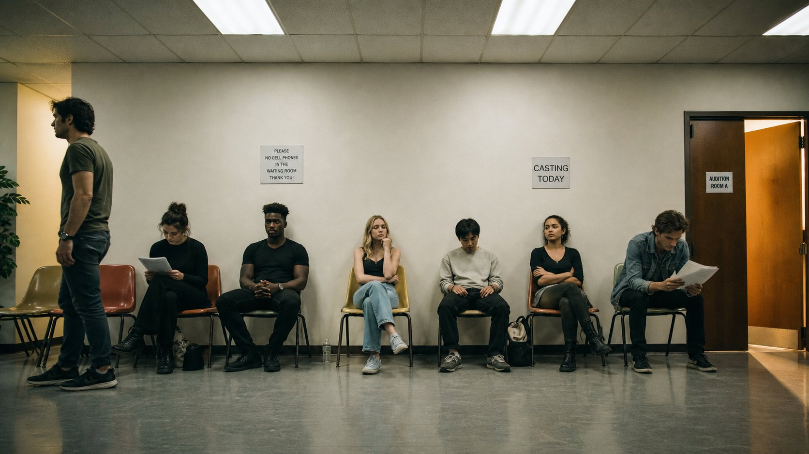
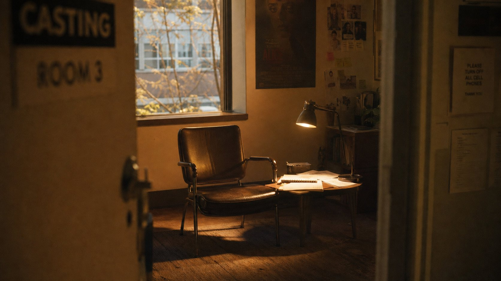
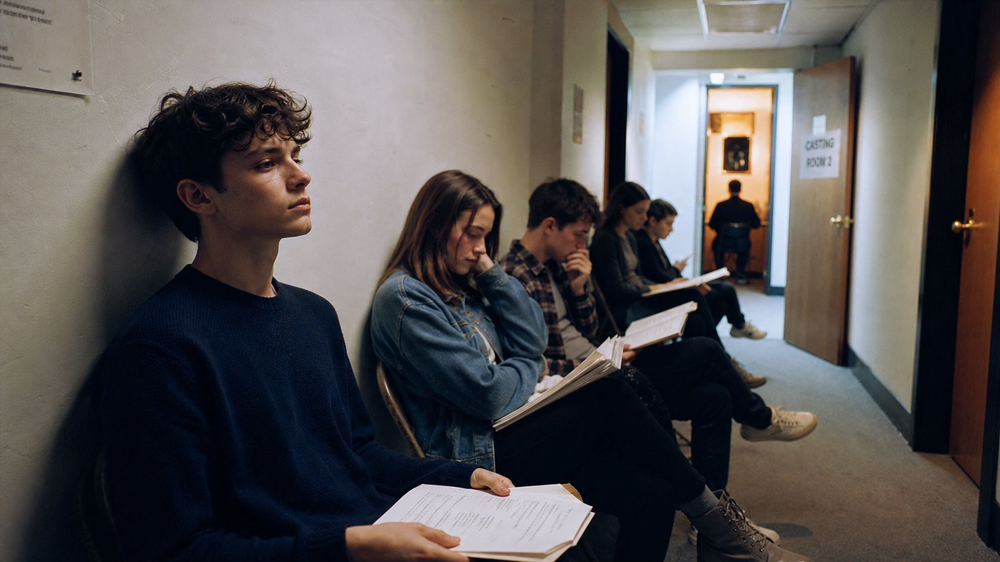
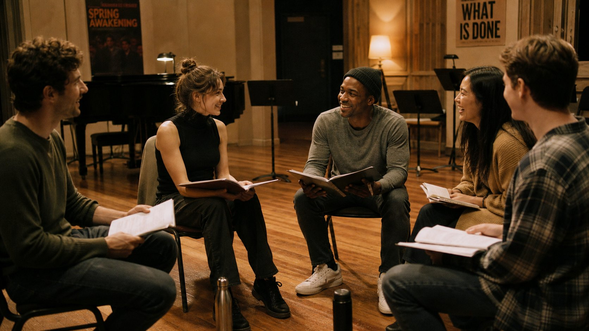
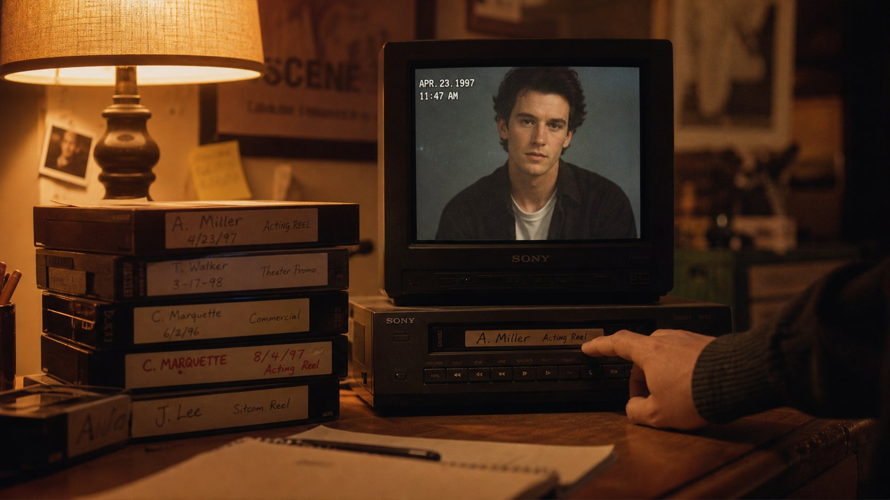

01:42:17
Feature Film
The Discovery
Lead — Elena, 32. The archaeologist who unearths more than artifacts.

Every face tells a story. Every casting tape holds a revelation. I sit in the reading room and watch characters come alive — one audition at a time.
The best casting decisions happen in the quiet moments. Not when an actor nails the monologue, but when they're waiting between takes and you see the character flicker across their face unbidden.
I keep a notebook for every project. Not sides or breakdowns — just observations. The way someone holds their coffee cup. How they laugh when they think no one is watching. These are the details that make a performance truthful, and they're what I look for in the reading room.
Directors hire me because I see what's possible, not just what's present. I've learned to recognize the spark — that electric moment when an actor stops performing and starts inhabiting a role. You can't manufacture it, but you can create the conditions for it to appear.
Hover to explore each actor's journey. The reading room reveals its secrets.
Lead — Elena, 32. The archaeologist who unearths more than artifacts.
Ensemble — Young actors finding their voice in the industry.
Supporting — Marcus, 45. The conductor who loses his hearing.
Lead — Sophie, 28. A casting director reflecting on her first audition.

A casting director discovers an unknown actress who changes the course of a filmmaker's career. The search for authenticity over artifice.

Following twelve young actors through the audition process, from open calls to final callbacks. The vulnerable beginning of every career.

A musical drama where the casting itself becomes the story — five strangers who must become a family through rehearsal and trust.

A meditative short about a casting director revisiting the tapes that launched her career. Memory, film, and the faces that stay with you.
I started as a casting assistant in New York, sorting headshots in a basement office on West 27th Street. My boss handed me a stack of eight hundred photos and said, "Find me someone who looks like they've never been loved." I found her in twenty minutes. She got the part.
Since then, I've cast over sixty films, from small independents to studio tentpoles. My office smells like coffee and old script pages. I keep every breakdown I've ever written — they're stacked in boxes along the back wall, a paper archive of stories that found their faces.
Based in Los Angeles with regular trips to London, Toronto, and Berlin, I maintain relationships with casting offices worldwide. But my favorite part of the job still happens in small rooms with bad lighting, watching someone become someone else for the first time.
Full-service casting for independent and studio features. From script breakdown to final callbacks, I guide every decision with narrative intent.
Pilot to series regular, recurring to guest. Building ensembles that sustain character across seasons and surprise audiences episode after episode.
Emerging talent discovery for short-form projects. Festival circuit strategy, actor-filmaker matching, and creative risk-taking in compressed narratives.
Acting workshops and audition coaching sessions. Creating safe spaces for actors to explore vulnerability and discover their authentic voice.
Open calls, self-tape review, and international talent scouting. Finding faces the industry hasn't met yet and connecting them with the right projects.
Cross-border casting partnerships for productions requiring authentic international talent. Networks spanning Europe, Asia, and Latin America.
Available for feature films, series, shorts, and creative collaborations. The reading room is always open.